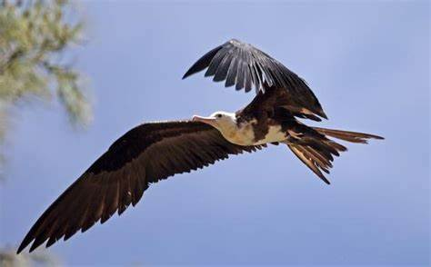

| 白腹軍艦鳥 | |  |

生物介紹：
白腹軍艦鳥（學名：Fregata andrewsi）是一種熱帶大型海鳥，屬於軍艦鳥科。捕食水面和淺灘中的魚類；經常搶奪其他海鳥所捕獲的魚，故又被稱為「海盜鳥」。白腹軍艦鳥身長89–100厘米（35–39英寸），翼展為205–230厘米（81–91英寸），重約1,550克（3.42磅）。喙長而尖端彎曲，腳趾間有蹼（蹼膜有很深的缺口），翅膀比較長而狹窄，尾部猶如深叉的形狀。背部黑色。腹部白色。雄性鳥的嘴是暗灰色；雌性鳥的嘴則是紅色。
分布：
其主要分布於印度洋，以聖誕島為繁殖地。
原因：
1988年列為受威脅，1994年提升為易危，自2000年起維持在最高評級極危內。主要原因是其繁殖地出現了極大量的細足捷蟻（Anoplolepis gracilipes），嚴重破壞了其存活空間。